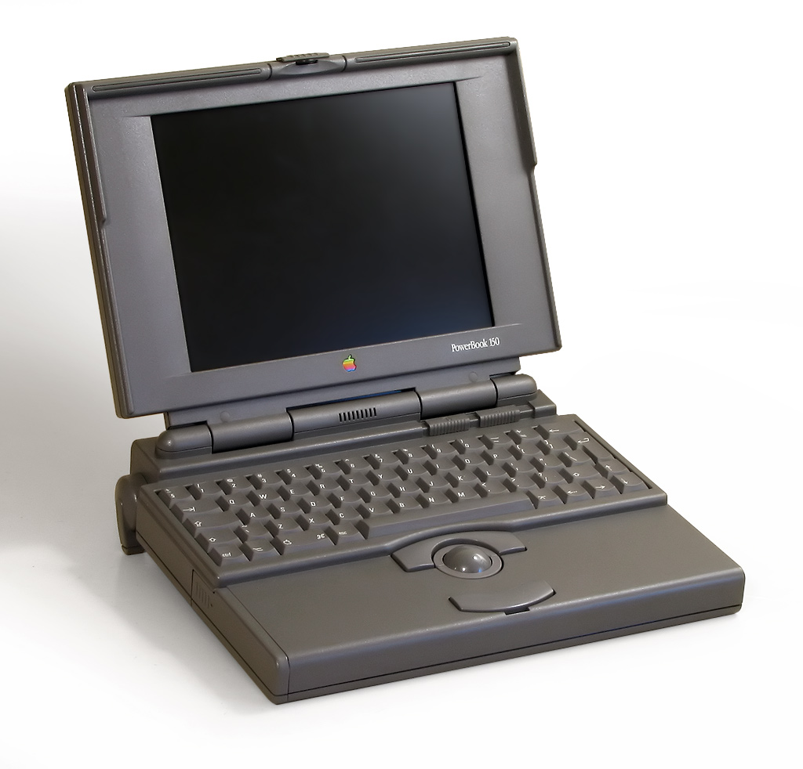
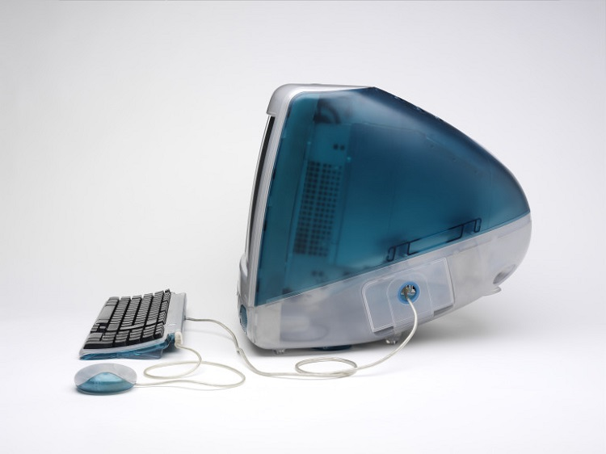
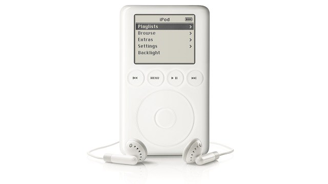
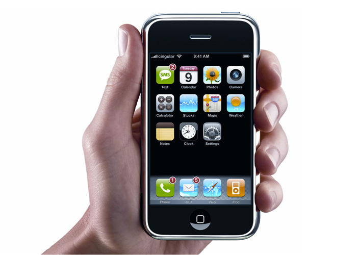

Tras el fracaso del Apple III y el Apple Lisa se centró en el Macintosh. Después de númerosos problemas con el software y de un anuncio en la Super Bowl el ordenador fue presentado en 1984.

Macintosh no tuvo el éxito que se esperaba por su alto precio. La compañía empezó a dividirse por la falta de éxito. Por suerte, la introducción de la primera impresora láser, junto con PageMaker y Macintosh crearon el concepto de "autoedición".
En 1985 se creo una lucha entre Jobs y Sculley. Jobs fue llevado a una parte apartada del campus de Apple, donde desarrolló una estrategia para acabar con Sculley. Este se enteró y destituyó a Jobs de su cargo. Ese mismo año creó NeXT Inc
Durante los siguientes años lanzó alguos productos importantes como el primer portátil Macintoshy más tarde PowerBook, que sería el primer portátil que presentaba el concepto actual.
En 1996 Jobs volviṕ a entras en Apple como consultor especializado, que ya en 1997, tras la expulsión de Amelio, se convirtió en el nuevo CEO de la compañía.
Ya en 1998 fue cuando las cosas en Apple empezarón a ser como hoy en día.Jonathan Ive como jefe del equipo de diseño creó el iMac el cual tuvó un gran éxito.
Fue en 2001 donde Apple empezó la escalada que le ha llevado a nuestros días, con la presentación del Mac OS y el iPod.el nuevo sistema era revolucionario en todos los aspectos.En 2001, también vio la luz la primera Apple Retail Store
En 2006 Apple pasó toda su gama a Intel. Desde entonces no ha hecho más subir su valor multiplicandose por 10 entre 2003 y 2006.Fue ya en 2007 cuando Apple dio el salto final que le llevó a su éxito total presentando el iPhone y el Apple TV y la compañía paso a llamarse Apple Inc.
